葡萄干 RaisinsRaisins 葡萄干
农耕 · AGRICULTUREAGRICULTURE · 农耕自西域与中亚传入敦煌，带来了葡萄种植、灌溉技术与定居文明。Carried into Dunhuang from the West and Central Asia — bringing grape farming, irrigation and settled life.
West & Central Asia → Dunhuang丝绸之路 · 一〇八驼铃 — Dunhuang Inspired Dry Fruit BrandThe Silk Road · 108 Camel Bells — 敦煌灵感干果品牌
取壁画之色，承丝路之味 —— 葡萄干 · 核桃 · 开心果Colors from the murals, flavors from the road — Raisins · Walnuts · Pistachios
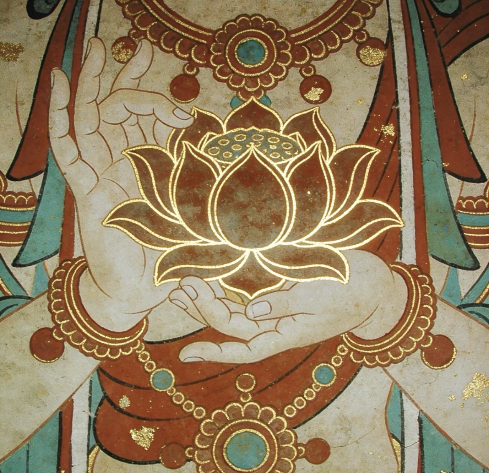
公元 366 年，乐僔和尚在鸣沙山东麓开凿了第一个洞窟。此后一千六百余年，敦煌壁画以赭红、石青、石绿与泥金，绘尽丝路的信仰与烟火。In 366 AD, the monk Le Zun cut the first cave into the cliffs by Mingsha Hill. For the next sixteen centuries, the murals of Dunhuang painted the faith and daily life of the Silk Road — in ochre, azurite, malachite and gold.
Caravan 108 从这些壁画中取色、取形、取意：藻井的秩序、莲花的洁净、祥云的流动。「108」是一串驼铃，也是佛珠的数目——一次穿越沙海的完整旅程。Caravan 108 borrows its color, form and spirit from these walls: the order of the caisson ceiling, the purity of the lotus, the motion of auspicious clouds. “108” is a string of camel bells — and the count of prayer beads — one complete journey across the sea of sand.
We borrow the mineral palette of the murals — ochre, azurite, malachite and gold — and let dried fruits carry the taste of the Silk Road into daily life.我们从壁画中借来矿物的颜色——赭红、石青、石绿与泥金——让干果把丝路的味道带进日常。
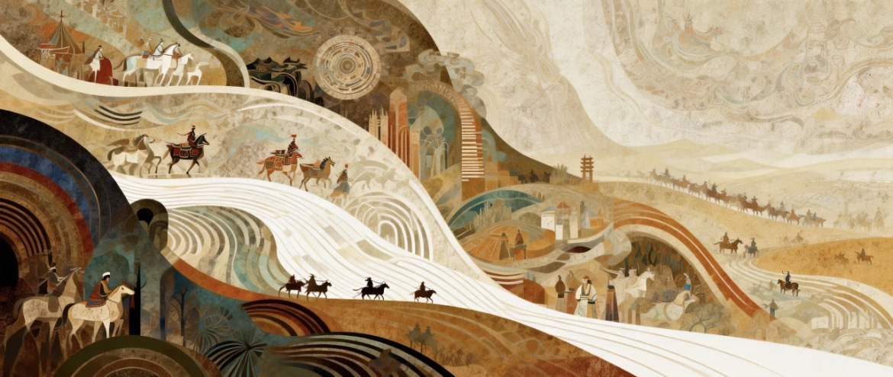
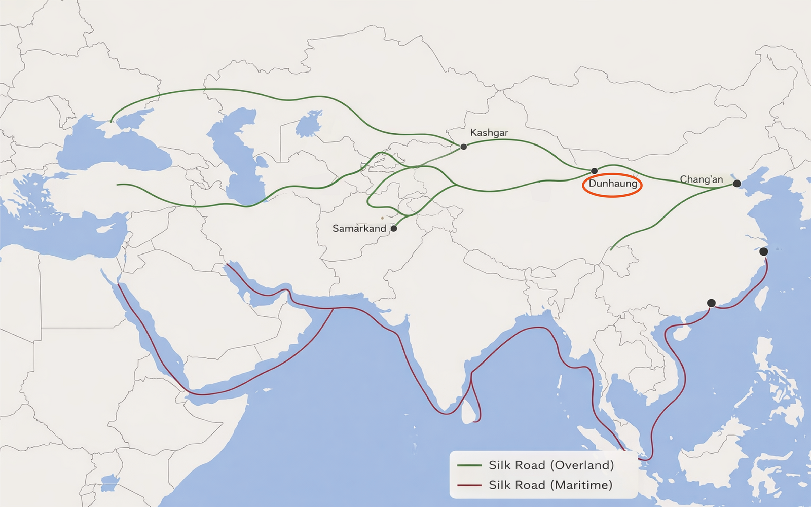
敦煌 DUNHUANGDUNHUANG 敦煌 长安Chang'an 喀什Kashgar 撒马尔罕Samarkand敦煌是陆路的咽喉：西域的葡萄、波斯的开心果、中亚的核桃，都在这里换驼、称重、装箱，再各奔东西。Dunhuang was the throat of the overland road: grapes from the Western Regions, pistachios from Persia, walnuts from Central Asia — all changed camels here, were weighed and crated, then went their separate ways.
三只奔兔共享三只耳朵，首尾相接，循环无端 —— 这个纹样最早见于莫高窟第 407 窟藻井。Three running hares share three ears, nose to tail, a cycle without end — first painted on the caisson ceiling of Mogao Cave 407.
它沿丝路一路西行，出现在波斯的铜盘、中亚的织物、欧洲的教堂之上。我们以它为品牌图腾：欧洲、中亚与波斯的干果文化，与中国在丝路上交织成一个闭环。The motif travelled west along the road, surfacing on Persian trays, Central Asian textiles and European church ceilings. We take it as our emblem: the dried-fruit cultures of Europe, Central Asia and Persia, interwoven with China in one closed loop.
外盒环饰取自汉字「回」的回纹 —— 回环、回味、回归，如丝路上千年不息的往返。The band on our outer box comes from the Chinese character 回 — return, recur, come home — like the road's thousand-year round trip.
轻便、耐存、高能量 —— 干果是丝路上最重要的随行货物。每一种，都是一条文明的来路。Portable, durable, high in energy — dried fruits were the Silk Road's most important travelling goods. Each one is a road by which a civilisation arrived.
自西域与中亚传入敦煌，带来了葡萄种植、灌溉技术与定居文明。Carried into Dunhuang from the West and Central Asia — bringing grape farming, irrigation and settled life.
West & Central Asia → Dunhuang由中亚东传入华，古称「胡桃」—— 一枚果核里的文化交流史。Travelled east from Central Asia; the old name “hu tao” — foreign peach — holds a whole history of exchange.
Central Asia → China ·「胡桃」来自波斯，价高而易携，是长距离贸易网络中的硬通货。From Persia: high in value, easy to carry — hard currency of the long-distance trade networks.
Persia → Silk Road Network农耕 → 迁徙 → 贸易 —— 三条线索在敦煌交汇，装进同一只礼盒。Agriculture → migration → trade — three threads meet at Dunhuang, packed into a single gift box.
Agriculture → Migration → Trade敦煌壁画中，祥云环绕佛陀与飞天，象征神圣与庇佑。旋转流动的云线暗合敦煌在丝路上的角色 —— 行旅、交换与探索。In the murals, auspicious clouds surround Buddhas and flying apsaras — sacred power and protection. Their rotating, flowing lines echo Dunhuang's role on the road: travel, exchange, exploration.
Rhythmic curves lend the cloud strong decorative power; simplified lines turn it into a contemporary oriental symbol.有节奏的曲线让云纹极具装饰性；简化的线条使它成为当代的东方符号。
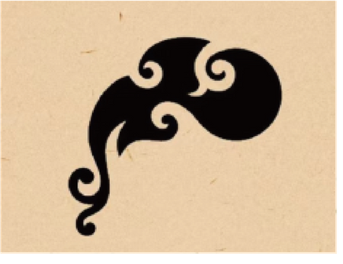
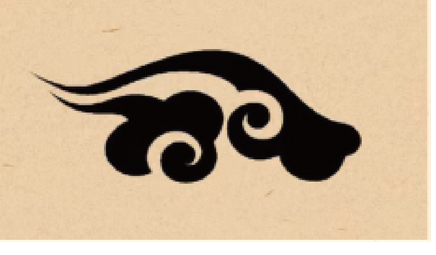
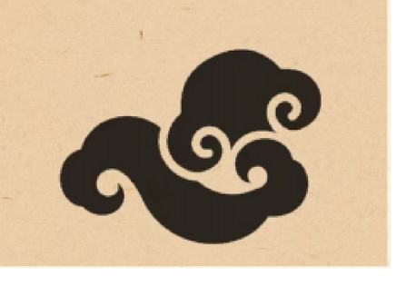
莲花在敦煌佛教艺术中象征洁净与觉醒。用于干果包装，它延伸为自然生长、原料本真与健康生活 —— 层层展开的花瓣，亦是丰收与分享。In Dunhuang's Buddhist art the lotus stands for purity and awakening. On a dried-fruit package it extends to natural growth, honest ingredients and a healthy life — petals unfolding like harvest and sharing.
The unfolding petals speak of harvest, sharing and good wishes — dried fruits as healthy snacks and gifts.层层展开的花瓣，隐喻丰收、分享与美意 —— 干果既是健康零食，也是礼物。
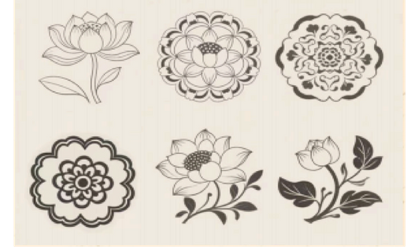
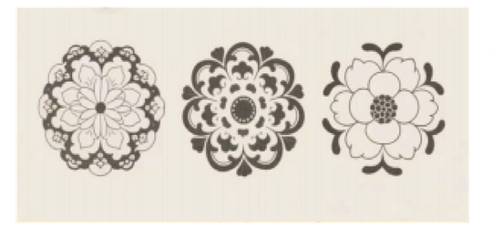
壁画中的葡萄纹呼应干果品类，四角葡萄暗示盒中之物；「回」字回纹与三兔共耳同义 —— 循环往复、周而复始的丝路时间。Grape scrolls in the murals echo what the box holds — grapes in the four corners hint at the contents. The 回 meander means return and recurrence: Silk Road time, going round and coming back.
Grapes hint at the contents; the Hui meander frames the box like the Silk Road's eternal round trip.四角的葡萄暗示盒中之物；回纹环盒一周，如丝路千年不息的往返。
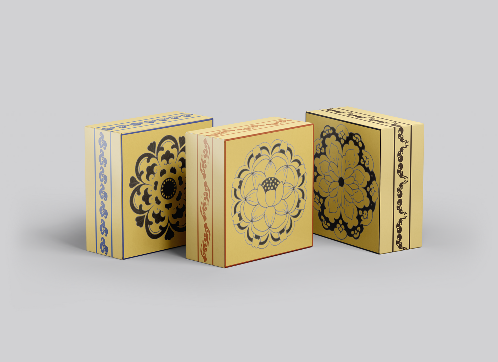
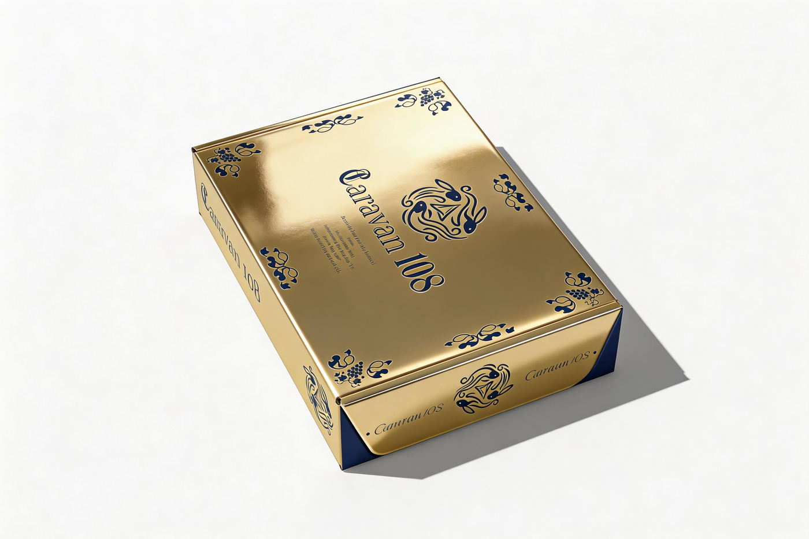
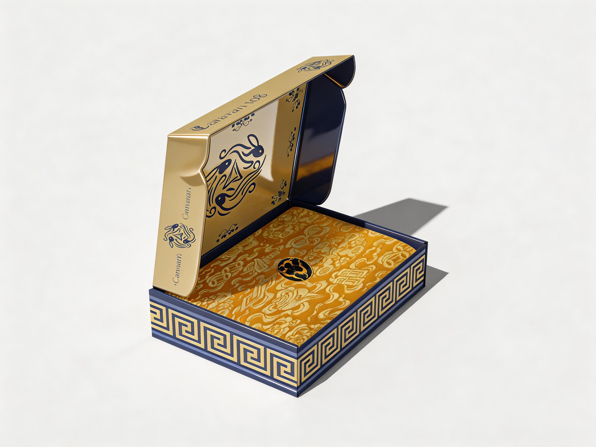